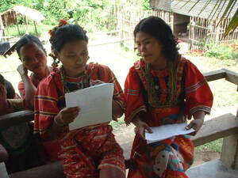
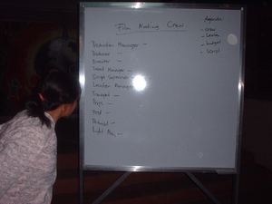

pitew  
/pitɔw/
Var. tew
(emphatic abbreviated form)
v_rt.
“look”
1.
v.
for someone (egpitew, migpitew/impitew, agent, eg><ø-) to look at somebody or something (egpitawen, impitew/migpitew/pigpitew, location, eg><en-)
Wrd.Gloss: look
Egpitawen ta ke eggendini.
We will see if he comes here.
Syn. egtengteng
Eng. look at; see; perceive; observe
Tag. tumingín; tingnán; makakíta; mamulát
Ceb. tan-aw; nakakita
Ilo.: kitáen
OCM: Sensation and Perception (151)
DDP: Sense, perceive (2.3), Look (2.3.1.1)
Online dict status: -
Usage level: F
v.
for someone (egpapitew, mipapitew/impapitew, agent, egpA><ø-) to show someone something (igpapitew, impapitew, theme, igpA-)
Iling te impapitew ni Anggam kuna.
Like the thing which Uncle showed you.
Just like what uncle showed to you.
Eng. show; display; exhibit
OCM: Sensation and Perception (151)
DDP: Sense, perceive (2.3), Show, let someone see (2.3.1.4)
Online dict status: -
Usage level: M
v.
for someone (egpapitew-pitew, migpapitew-pitew/impapitew-pitew, agent, egpA><ø-rdpRT-) to be good on the outside but not in secret (e.g., pretending) (egpapitew-pitewen, impapitew-pitew/migpapitew-pitew/pigpapitew-pitew, patient, egpA><en-rdpRT-)
Egpapitew-pitew rè sikandin te kandin ne keupianan.
He pretends only by showing his goodness.
Eng. pretending; hypocrite; insincere; show-off
DDP: Show, let someone see (2.3.1.4)
Online dict status: -
Usage level: R
v.
for two people (egpapitpitawey, migpapitpitawey/impapitpitawey, eg><ø-pA><ey-rdpCVC-) to look each other in the eyes
Eng. look each other in eyes
DDP: Look (2.3.1.1), Show, let someone see (2.3.1.4)
Online dict status: -
Usage level: R
2.
v.
for someone (egpamitew/egpammitew, migpamitew/impamitew/impammitew, pamitew/pammitew, agent, eg><ø-paN-) to look for something (egpamitawen/egpammitawen, impamitew/impammitew/pigpamitew/pigpammitew, theme, eg><en-paN-)
Egpamitawen ku pad eyew igpapitew ku keykew.
I will look for it so that I can show it to you.
Eng. look for; search; seek; sought
Tag. humánap; maghanáp
Ceb. mangità
Ilo.: birúken
OCM: Hunting and Trapping (224), Acquisition and Relinquishment of Property (425)
DDP: Look (2.3.1.1)
Online dict status: -
Usage level: F
Updated by: RJH,RJH,QDL,RJH
Last updated: 05/Jan/2018
"pegpitew" in text "A Father Tells His Children about School"
"egpakapitew" in text "A Father Tells His Children about School"
"pitawa" in text "A Father Tells His Children about School"
"eg-pitawa" in text "Making Lead Sinkers"
"papitew" in text "Ke due masakit"
"pitawen" in healthbook "Migpamawian ni Inuk ka sumbaley rin ne migpangaliskis"
"papitew" in healthbook "Migsistu si Wini"
"papitew" in healthbook "Migsistu si Wini"
"papitew" in healthbook "Miggendiye te huspital si Mirsi ka migtibi"
"papitew" in healthbook "Miggendiye te huspital si Mirsi ka migtibi"
"Pitawa" in song "Malehet ne geyinawa ni Hisus"
"pitawen" in song "Mabantug ka"
"pitawen" in song "Si Hisus de ka egpitawen"
This page last updated: 03-Jan-2020
Copyright © 2009-2014, Matigsalug Language Christian Association, Inc